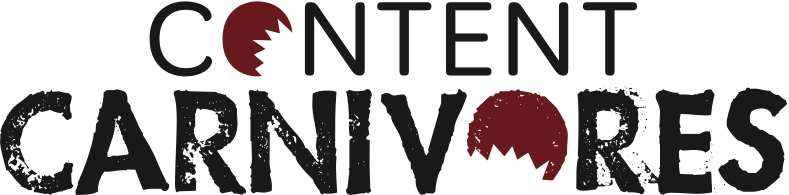
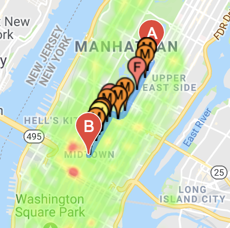
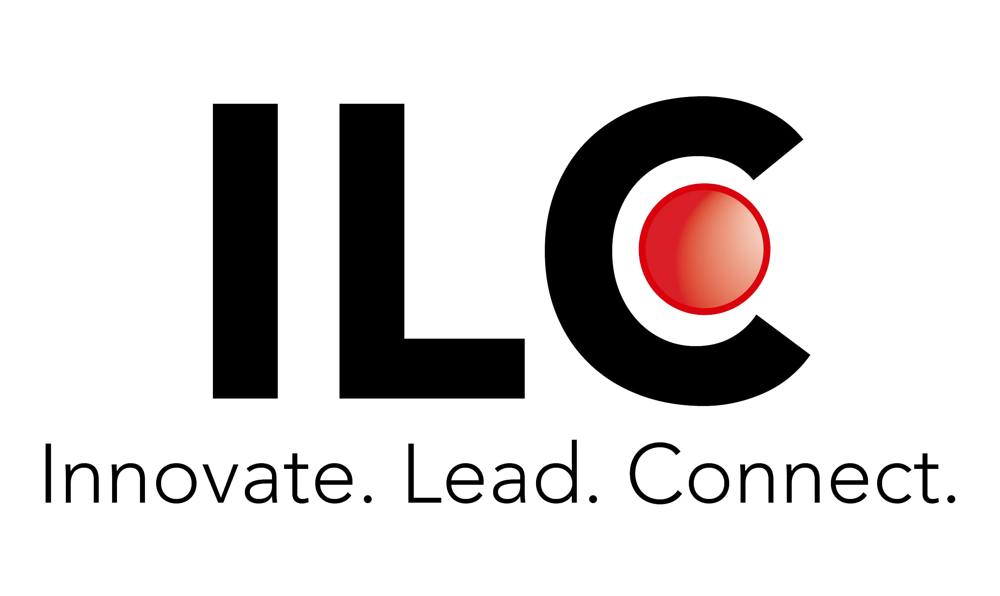

Hi, I'm Melanie
B.S in Computer Science, Minor in Statistics
I'm a rising 3rd year at the University of Chicago interested in AI, databases, UI/UX design, and hardware design.
I love designing, drawing, and building things that enhance life, whether it is making everyday tasks or
practices more accessible, more efficient, or more productive.
Resume
More About Me:
April 2019 - Present
I am currently a Software Engineer Intern at Journey Foods, an AI-powered platform that supports product management and nutrition services for food companies. I primarily work with generating a variety of business-critical and actionable data to merchants through reports, visualizations, and other insights.
Visit Site
I am currently a Software Engineer Intern at Journey Foods, an AI-powered platform that supports product management and nutrition services for food companies. I primarily work with generating a variety of business-critical and actionable data to merchants through reports, visualizations, and other insights.
Visit Site

October 2018 - April 2019
During my 2nd year I worked as a Software Engineer Intern at Content Carnivores, a company that uses machine learning to generate social media content. There, I'm leading a project focusing on the intersection between online financial content and SEC/FINRA compliance.
Visit Site
During my 2nd year I worked as a Software Engineer Intern at Content Carnivores, a company that uses machine learning to generate social media content. There, I'm leading a project focusing on the intersection between online financial content and SEC/FINRA compliance.
Visit Site
June 2018 - September 2018
Last summer I was a Software Development Intern at Medivis, a medical visualization startup specializing in AR.
There, I unified anatomy part information into a database, and built a corresponding web interface for both internal and external use.
Visit Site
Last summer I was a Software Development Intern at Medivis, a medical visualization startup specializing in AR.
There, I unified anatomy part information into a database, and built a corresponding web interface for both internal and external use.
Visit Site

September 2018
SafeRoute is a web application that determines the safest route home based on public crime data. The application gives each route a 'safety score,' and generates a heat map with interactive and informative markers.
My inspiration for this project came from friends and family who wanted to feel safe when running at night, or when walking in neighborhoods they didn't know well.
Visit Project Website is currently down. Will be fixed soon
SafeRoute is a web application that determines the safest route home based on public crime data. The application gives each route a 'safety score,' and generates a heat map with interactive and informative markers.
My inspiration for this project came from friends and family who wanted to feel safe when running at night, or when walking in neighborhoods they didn't know well.
Visit Project Website is currently down. Will be fixed soon
September 2018 - Present
I'm also currently the President of International Leadership Council (ILC): Entrepreneurship, UChicago's premier student business organization.
As a CORE member, I am in charge of finding speakers, leading activities, developing the education curriculum, and recruiting new cohorts.
In my first year, I created a stationery subscription startup that raised over $2000 in 100 days, and won the award for Most-Profit-Made in the club’s 100 Day Startup Challenge.
Visit Site

I'm also currently the President of International Leadership Council (ILC): Entrepreneurship, UChicago's premier student business organization.
As a CORE member, I am in charge of finding speakers, leading activities, developing the education curriculum, and recruiting new cohorts.
In my first year, I created a stationery subscription startup that raised over $2000 in 100 days, and won the award for Most-Profit-Made in the club’s 100 Day Startup Challenge.
Visit Site
July 2017 - August 2017
The summer before college, I worked as a field manager and canvassar for Environment New York, a non-profit environmental advocacy organization.
I raised over $3,000 in 3 weeks to fund research on keeping waterways clean, and to promote environmental awareness in the local NY area.
The summer before that, I researched sustainable, alternative sources of fuels at The Cooper Union, and presented my research in front of hundreds of peers and several professors of the University.
Visit Site
The summer before college, I worked as a field manager and canvassar for Environment New York, a non-profit environmental advocacy organization.
I raised over $3,000 in 3 weeks to fund research on keeping waterways clean, and to promote environmental awareness in the local NY area.
The summer before that, I researched sustainable, alternative sources of fuels at The Cooper Union, and presented my research in front of hundreds of peers and several professors of the University.
Visit Site
For more background about me, feel free to visit my resume, or contact me directly at
melaniechow23@gmail.com.